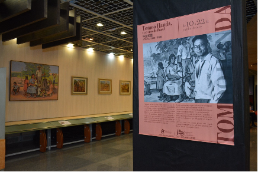

Exposição de Origami



De terça-feira a domingo
Horário: 13:30h - 17:00h.
Fechado às segundas-feiras.
Para a comemoração dos 120 anos do tratado de amizade Brasil-Japão, o Museu teve a aprovação de um projeto na Lei...
Tablet disponível no 8° andar do Museu
Contribuição: R$ 12,00
Observação: Locação do tablet somente com documento original válido. O documento ficará retido até a devolução do tablet.
Favor devolver até 17h25.
Para grupo de 50 pessoas, período de 60 minutos - de terça à sexta-feira.
Monitoria: R$ 130,00
Para um grupo de 42 pessoas.
Monitoria: R$ 130,00
Transporte: a consulta de orçamento
O acervo do Museu só é acessível aos pesquisadores com agendamento prévio, mediante o envio do plano de pesquisas ou de estudos, por email.
Rua: São Joaquim, 381 - Liberdade - São Paulo - SP
Cep: 01508-900
Telefone: (11) 3209-5465 / 3208-1755 (ramal 117)
E-mail: museu@bunkyo.org.br
Se preferir preencha os dados abaixo e em breve retornaremos seu contato.